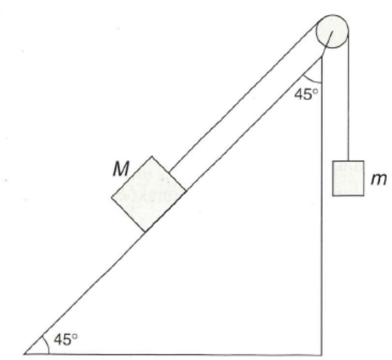

Håndskrift og KI
Prøveeksamen V2025 i fysikk: regn på papir, last opp bildet, få tilbakemelding
🌐 English · Norsk bokmål
Løs oppgavene i oppgavesettet (PDF) på papir. For hver deloppgave kan du
- skrive sluttsvaret i svarfeltet og velge Sjekk (bruk desimalpunkt, og ikke skriv enheten i feltet);
- ta et bilde av utregningen, laste det opp under Last opp bilder og velge Tilbakemelding. Hvert nytt klikk gir et dypere hint: først en vurdering, så en forklaring, så framgangsmåten og til slutt et løsningsforslag. Menyen Språk for tilbakemeldingen ved hvert opplastingsfelt velger språket KI-en svarer på (engelsk, norsk, svensk, spansk, russisk eller tysk) for akkurat den deloppgaven.
Tilbakemeldingen kommer fra en KI-modell du velger selv under tannhjulet ⚙ (direkte API med egen nøkkel, eller «kopier instruksjon» til en KI-chat). Modellen må kunne lese bilder. Bildet og oppgaveteksten sendes til leverandøren du velger. KI-en kan ta feil: les tilbakemeldingen kritisk.
Knappene Fyll inn student 1 og Fyll inn student 2 laster inn ekte, anonymiserte besvarelser fra to studenter på oppgave 1–4, med bilde og sluttsvar, så du slipper å laste opp selv. Knappene øverst fyller inn alle deloppgavene samtidig. Lærerens vurdering av hver besvarelse står i benchmark-arket. Promptene ligger i YAML-filer i repoet; se Spill med promptene. Prompt-sandkassen nederst på siden lar deg prøve endringer uten å bygge siden på nytt.
En ball kastes rett opp fra en høyde \(1{,}5\,\mathrm{m}\) over bakken. Startfarten til ballen er \(6{,}0\,\mathrm{m/s}\).
a) Toppunktet
Hvor lang tid tar det før ballen er på sitt høyeste punkt? Hvor høyt over bakken er den da?
Vis utregningen din for a). Last opp et bilde av det du har skrevet på papir.
b) Fartsgrafen
Tegn fartsgrafen til ballen fra den forlater hånden til den lander.
Vis grafen din for b). Tegn grafen på papir og last opp et bilde av den.
c) Potensiell energi
Ballen har massen \(450\,\mathrm{g}\). Hvor stor er endringen i ballens potensielle energi i løpet av det første sekundet?
Vis utregningen din for c). Last opp et bilde av det du har skrevet på papir.
Overflatetemperaturen til en stjerne er \(6100\,^\circ\mathrm{C}\), og den utstrålte effekten fra stjerna er \(3{,}93\cdot10^{26}\,\mathrm{W}\).
a) Bølgelengde
Ved hvilken bølgelengde er utstrålingstettheten fra stjerna størst?
Vis utregningen din for a). Last opp et bilde av det du har skrevet på papir.
b) Overflateareal
Regn ut stjernas overflateareal.
Vis utregningen din for b). Last opp et bilde av det du har skrevet på papir.
Massen til et gjennomsnittlig nitrogenmolekyl (\(\mathrm{N_2}\)) er \(28{,}0\,\mathrm{u}\). En mengde på \(4{,}50\cdot10^{23}\) molekyler nitrogengass er innestengt i en sylinder med radius \(12{,}0\,\mathrm{cm}\) og høyde \(20{,}0\,\mathrm{cm}\). Sylinderen oppbevares i et rom med normalt lufttrykk (\(101\,\mathrm{kPa}\)), og trykket til gassen er \(120\,\mathrm{kPa}\).
a) Temperatur og massetetthet
Beregn temperaturen og massetettheten til gassen.
Vis utregningen din for a). Last opp et bilde av det du har skrevet på papir.
b) Stempelets masse
Sylinderens lokk er et stempel som kan skli friksjonsløst opp og ned. Hva er stempelets masse?
Vis utregningen din for b). Last opp et bilde av det du har skrevet på papir.
En ball med masse \(57{,}0\,\mathrm{g}\) ligger på et bord og skytes ut med en horisontal fjær som vist på figuren. Bordplatas høyde over bakken er \(h=1{,}40\,\mathrm{m}\). Før fjæra løses ut, er den presset sammen med \(5{,}00\,\mathrm{cm}\), og idet ballen forlater fjæra, har ballen en fart på \(3{,}00\,\mathrm{m/s}\).

a) Fjærkonstanten
Hvor stor er fjæras fjærkonstant?
Vis utregningen din for a). Last opp et bilde av det du har skrevet på papir.
b) Kastlengden
Vi antar at ballen ruller uten fartsendring fra den forlater fjæra til den kommer til kanten av bordet. Hvor langt beveger ballen seg i horisontal retning fra bordkanten til den lander?
Vis utregningen din for b). Last opp et bilde av det du har skrevet på papir.
c) Vertikal fart
Hvor stor er farten i vertikal retning når ballens kinetiske energi er \(480\,\mathrm{mJ}\)?
Vis utregningen din for c). Last opp et bilde av det du har skrevet på papir.
To studenter legger en kloss med masse \(450\,\mathrm{g}\) i en væske med tetthet \(0{,}87\,\mathrm{kg/dm^3}\). Klossen flyter, og studentene anslår at \(80\,\%\) av klossen er under overflaten.
a) Klossens volum
Bruk disse verdiene til å beregne klossens volum.
Vis utregningen din for a). Last opp et bilde av det du har skrevet på papir.
b) Dobbelt trykk
Ved hvilken dybde har trykket i væsken doblet seg, sammenlignet med normalt lufttrykk (\(101\,\mathrm{kPa}\)) ved overflata av væska?
Vis utregningen din for b). Last opp et bilde av det du har skrevet på papir.
a) Resistansen R₂
Vi seriekopler to motstander til en spenningskilde med polspenning på \(230\,\mathrm{V}\). Spenningen over \(R_1\) er \(U_1=150\,\mathrm{V}\), og strømmen er \(10\,\mathrm{A}\).
Hvor stor er resistansen \(R_2\)?
Vis utregningen din for a). Last opp et bilde av det du har skrevet på papir.
b) Varme opp vann
Motstanden \(R_1\) i kretsen i a) brukes til å varme opp vann. (I a) er \(U_1=150\,\mathrm{V}\) og strømmen \(10\,\mathrm{A}\).)
Hvor lang tid tar det å varme opp \(5{,}0\,\mathrm{dl}\) vann fra \(4{,}0\,^\circ\mathrm{C}\) til \(60{,}0\,^\circ\mathrm{C}\)? Vi antar at det ikke går noe varme til omgivelsene.
Vis utregningen din for b). Last opp et bilde av det du har skrevet på papir.
c) Størst effekt
I en annen krets med to motstander vet vi at \(R_1>R_2\).
I hvilken av motstandene er det størst effekt dersom de seriekoples til et batteri? I hvilken av motstandene er det størst effekt hvis de parallellkoples og koples til batteriet? Begrunn svarene dine.
Vis svaret og begrunnelsen din for c). Last opp et bilde, eller skriv begrunnelsen i feltet.
Et foton har bølgelengden \(560\,\mathrm{nm}\).
a) Frekvens og energi
Regn ut frekvensen og energien til et foton med bølgelengden \(560\,\mathrm{nm}\).
Vis utregningen din for a). Last opp et bilde av det du har skrevet på papir.
b) Fotoner per sekund
Ei lampe på \(60\,\mathrm{W}\) sender ut ensfarget lys med bølgelengden \(560\,\mathrm{nm}\). Hvor mange fotoner sender lampa ut per sekund?
Vis utregningen din for b). Last opp et bilde av det du har skrevet på papir.
I framtida kan det bli aktuelt å utnytte følgende kjernereaksjon i en atomreaktor:
\[ {}^{2}_{1}\mathrm{H}+{}^{2}_{1}\mathrm{H}\;\to\;{}^{3}_{2}\mathrm{He}+{}^{A}_{B}\mathrm{X} \]
a) Den ukjente partikkelen
Hva blir den ukjente partikkelen \({}^{A}_{B}\mathrm{X}\)? Er reaksjonen en fusjon eller en fisjon? Begrunn svaret.
Vis svaret og begrunnelsen din for a). Last opp et bilde, eller skriv begrunnelsen i feltet.
b) Frigjort energi
Hva blir den frigjorte energien fra én slik reaksjon?
Vis utregningen din for b). Last opp et bilde av det du har skrevet på papir.
To klosser er festet til hverandre med ei stram snor som går over ei friksjonsfri trinse. Kloss \(M\) ligger på et skråplan med helningsvinkel \(45^\circ\), og den lille klossen \(m\) henger loddrett. Friksjonskoeffisienten (friksjonstallet) mellom kloss \(M\) og underlaget er \(0{,}135\). Massen til den lille klossen er \(m=5{,}15\,\mathrm{kg}\). Når klossene slippes, får den store klossen \(M\) en akselerasjon på \(2{,}0\,\mathrm{m/s^2}\) nedover skråplanet.

a) Snordraget
Regn ut snordraget.
Vis utregningen din for a). Last opp et bilde av det du har skrevet på papir.
b) Massen M
Beregn massen til den store klossen \(M\).
Vis utregningen din for b). Last opp et bilde av det du har skrevet på papir.